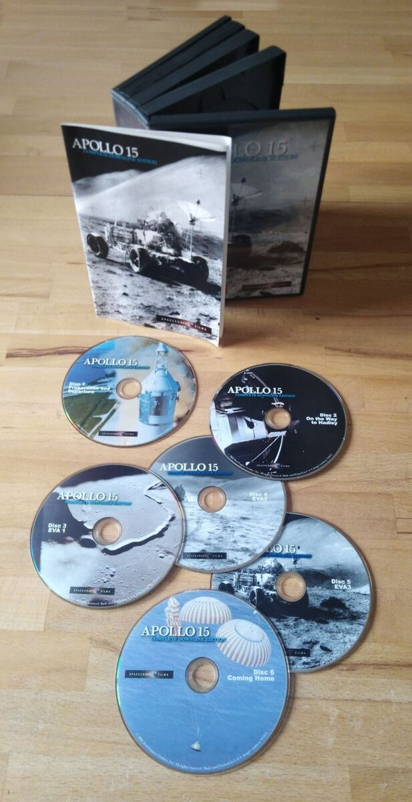
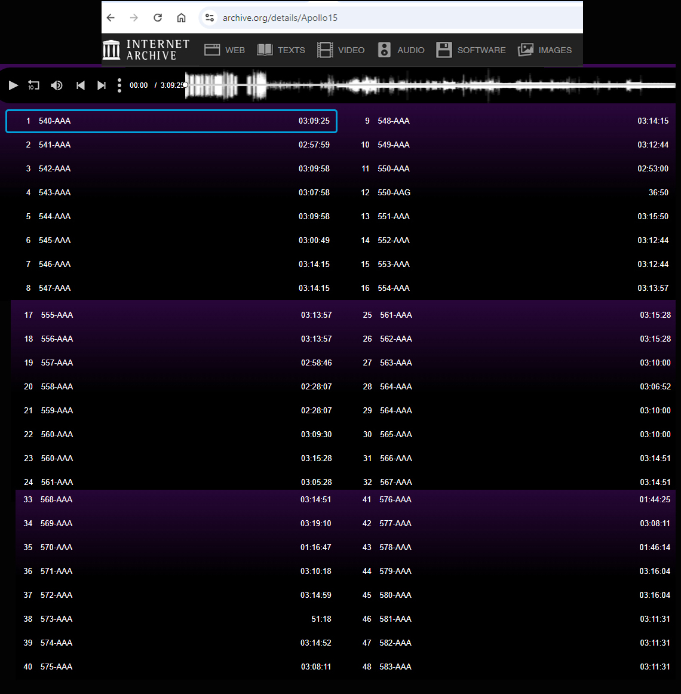
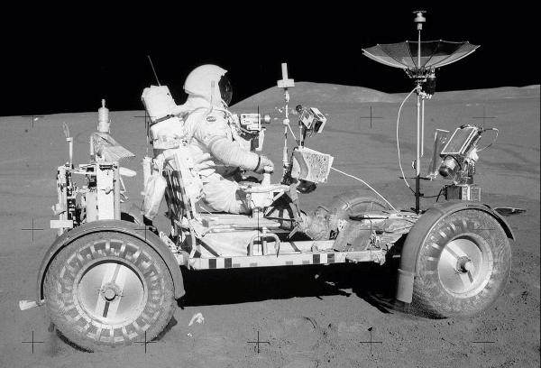
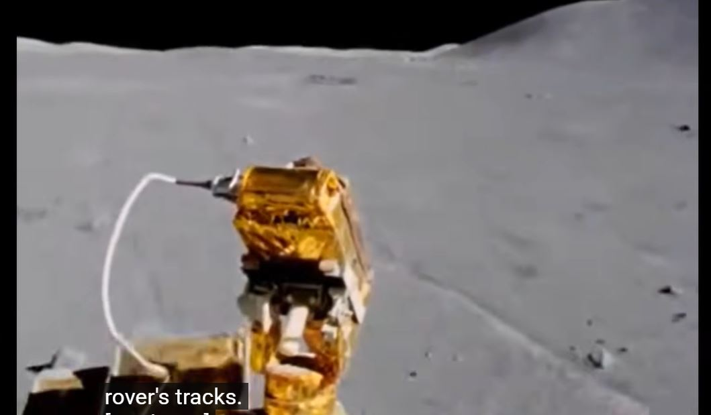
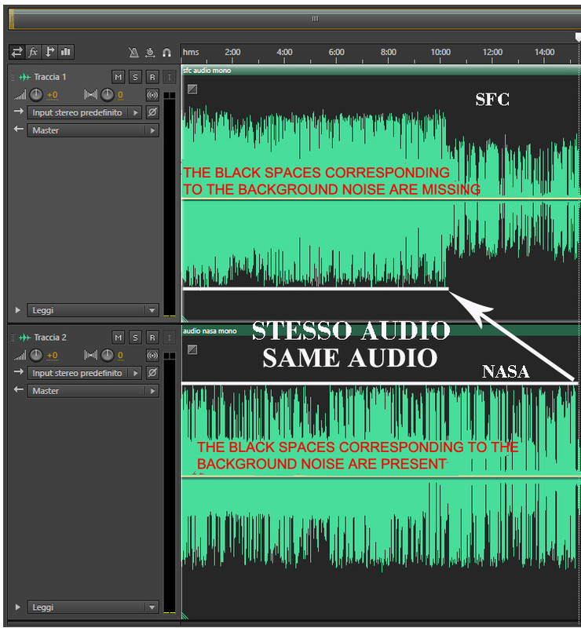
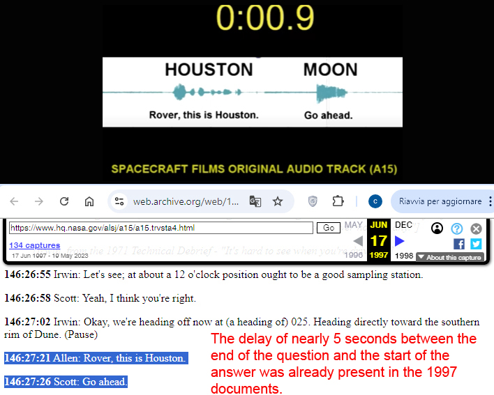
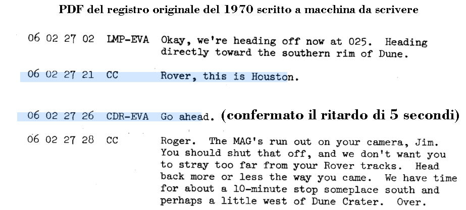

14 - Given that we have examined the original videos from spacecraft films, and that the debunkers themselves acknowledge that these videos are unedited, can you explain why in several instances the delay between the question and the answer is far shorter than it should be if the conversation had truly taken place between the Earth and the moon?
Spacecraft Films DVDs are not the repositories of the historical truth of lunar missions, but are commercial products created and sold to make profits, and not to archive files, films and NASA documents. Among other things, today SCF is out of business and no longer produces its DVDs. That the SCF cannot perform this function is perfectly demonstrable. Take, for example, the Apollo 15 mission in which the supposed lack of audio delays in Earth-Moon communications were found. SCF offers a box set of 6 DVDs, this one:
 The video, however, came from the 16 mm Maurer Data Acquisition Camera mounted on the rover. Since it was installed on Irwin's side of the vehicle, he could turn it on and off and point it in different directions while Scott drove.
The video, however, came from the 16 mm Maurer Data Acquisition Camera mounted on the rover. Since it was installed on Irwin's side of the vehicle, he could turn it on and off and point it in different directions while Scott drove.
 At that stage, Spacecraft Films faced a synchronization problem. How could they keep a continuous audio track synchronized with a shorter film sequence, so that when David Schott famously calls out, "Rover tracks!", the corresponding rover tracks actually appear on screen?
At that stage, Spacecraft Films faced a synchronization problem. How could they keep a continuous audio track synchronized with a shorter film sequence, so that when David Schott famously calls out, "Rover tracks!", the corresponding rover tracks actually appear on screen?

We know that a maximum of 240 minutes can be stored in a DVD of audio/video content, equivalent to 4 hours. 4 hours for 6 DVDs makes 24 hours, so of that mission that lasted more than 180 hours, only a part of it was reported. It must be said that all the audio/video material coming from the mission camera and the video material coming from the lunar camera, the Maurer, has been reported in full and without cuts on the DVDs, and hence the definition of film and video unedited given by the debunkers, a wording that can be absolutely shared, but this cannot apply to the vast amount of audio that we see deposited in this storage site and shared, which NASA uses and relating only to the Apollo 15 mission
archive.org [Apollo 15] Now let's answer precisely the question of why in a particular chapter of one of the 6 DVDs in the Earth-Moon communications there are no technical delays due to distance. The Earth-Moon communication delays were unintentionally removed by Spacecraft Films when they synchronized NASA audio with motion-picture footage from the same Apollo 15 EVA (the rover's return from Dune Crater). The reason is straightforward. The audio came from the rover's low-gain antenna, which maintained a continuous radio link with Houston. As a result, the audio recording is essentially uninterrupted. The video, however, came from the 16 mm Maurer Data Acquisition Camera mounted on the rover. Since it was installed on Irwin's side of the vehicle, he could turn it on and off and point it in different directions while Scott drove.
The video, however, came from the 16 mm Maurer Data Acquisition Camera mounted on the rover. Since it was installed on Irwin's side of the vehicle, he could turn it on and off and point it in different directions while Scott drove.

Consequently, the film does not provide one continuous sequence. At one point the camera was switched off for several minutes, while the radio communications continued to be recorded in Houston without interruption. This GIF shows the exact point where the film footage is interrupted: At that stage, Spacecraft Films faced a synchronization problem. How could they keep a continuous audio track synchronized with a shorter film sequence, so that when David Schott famously calls out, "Rover tracks!", the corresponding rover tracks actually appear on screen?
At that stage, Spacecraft Films faced a synchronization problem. How could they keep a continuous audio track synchronized with a shorter film sequence, so that when David Schott famously calls out, "Rover tracks!", the corresponding rover tracks actually appear on screen?

They had three possible options: · Leave the audio untouched and insert a black screen reading "No video - audio only" for several minutes during the missing film segment, preserving perfect synchronization. · Slow down the film to stretch it and recover the missing time. However, this would have altered the original footage and contradicted the DVD's claim that the film and video were unedited. · Shorten the audio by removing silent intervals that contained nothing but background noise, thereby recovering the time lost in the missing film footage while keeping the "Rover tracks!" call synchronized with the corresponding images. Spacecraft Films chose the third option, which was clearly the most practical. It avoided several minutes of black screen at the beginning of the chapter—something that would likely have prompted viewers to skip ahead. It preserved the original playback speed of the film, and it also made the soundtrack easier to follow by eliminating long pauses containing only background noise. An unintended but inevitable consequence of removing those silent intervals was that the normal Earth-Moon communication delays also disappeared. This fully explains the anomaly raised in Question 14: the expected transmission delays are absent only in the Spacecraft Films DVD, where NASA audio was edited to match the film footage. The same anomaly does not appear in any other Apollo 15 audio recording of the rover's return from Dune Crater, because those recordings preserve the original timing of the communications. The comparison below illustrates exactly what happened. In the first part of the Spacecraft Films soundtrack, the green sections are noticeably compressed because the pauses containing only background noise were removed.
Once the synchronized film footage ended, there was no longer any reason to continue compressing the audio. From that point onward, the soundtrack remains essentially identical to the original NASA recording, apart from a few isolated edits where exceptionally long stretches contained nothing but background noise and no accompanying images—dead time that would have added little value to a commercial DVD. However, to close the matter definitively, let's add two images and two links.
[archive.org] Apollo 15 Station 4 at Dune Crater In the image above, together with the link, you can see a delay calculated in American Moon in less than a second and the corresponding page of the Apollo Journal of June 1997, so before the release of the SCF DVDs, and as we see the technical delay of 5 seconds there is.
APOLLO 15 TECHNICAL AIR-TO-GROUND VOICE TRANSCRIPTION In this second image with the link, you can see the page of the 1970 mission logs and where, apart from the different count of the phases of the mission (days, hours, minutes and seconds compared to only hours, minutes and seconds for the Apollo Journal), the delay is perfectly present and is still 5 seconds. The issue is now very clear and perfectly demonstrated: the cuts in the hiss, including the technical delays of Earth-Moon communications, were made by the SCF for a valid and documented reason and it was possible to make them because they were audio without a video connected.« PreviousNext »
Chapters:
IIIIIIIVVVIVIIVIIIIXXXIXIIXIII